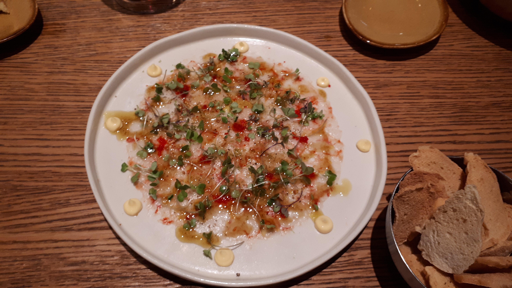
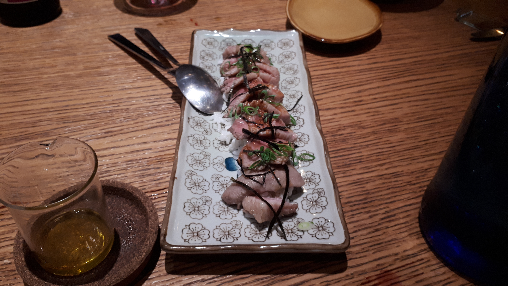
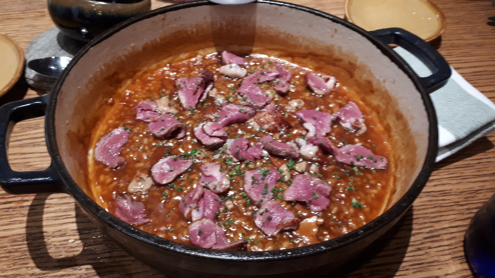
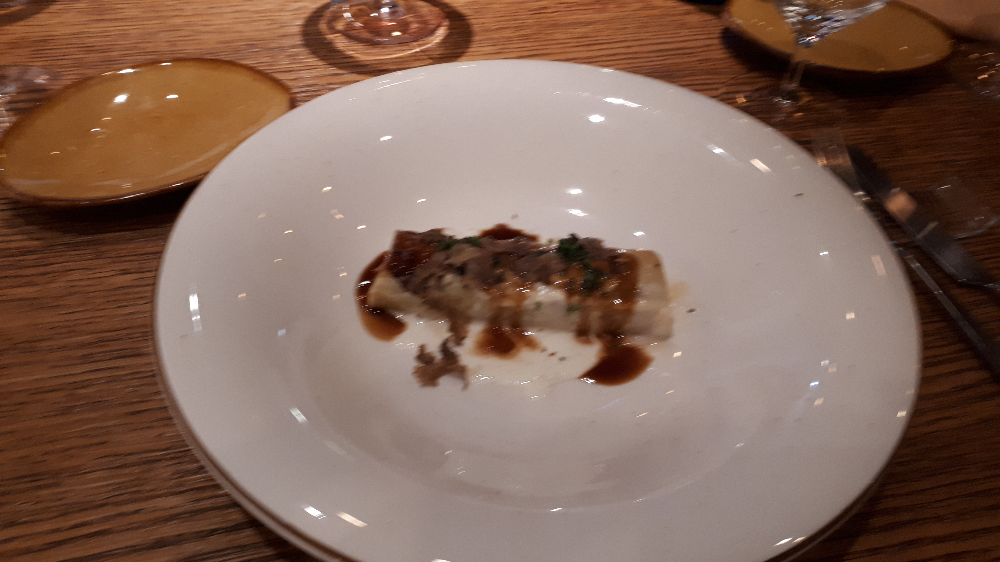

<!-- Main Content -->
<div class="container">
  <div class="row">
    <div class="col-lg-8 col-md-10 mx-auto">
      <div class="post-preview">
        <h2 class="post-title"><strong>{{ title }}</strong></h2>
        <p class="post-meta"></p>
      </div>
      <hr>
      <div class="post-preview">
        <h4 class="post-subtitle post-meta">{{ subtitle }}</h4>
        <p>Visité este restaurante invitado por un amigo que celebraba la inminente llegada de un miembro mas a su familia y formar así una espléndida familia numerosa. Bravo por las dos cosas, la familia numerosa y como no, por la invitación.</p>
        <p>Puesto que se trataba de una celebración y la tarde se había puesto muy calentita, decidimos no bajar la guardia y comenzar con unos vermuts seguidos de más vermuts.</p>
        <p>Y por fin, el aperitivo, un pincho de hígado de rape para abrir boca y el primer plato, un excelente carpaccio de carabineros al que le siguió un bonito soasado.</p>
        <a class="fancybox" rel="group" href="../../assets/images/restaurantes/terreo/24_07_2019/carpacho_de_carabineros.jpg">
          
        </a>
        <p class="font-weigth-light text-uppercase p-title-photos">Carpaccio de carabineros</p>
        <a class="fancybox" rel="group" href="../../assets/images/restaurantes/terreo/24_07_2019/bonito_soasado.jpg">
          
        </a>
        <p class="font-weigth-light text-uppercase p-title-photos">Bonito soasado</p>
        <p>El tercer plato fue una tosta de anchoas del que no tengo foto, pero que estaba en consonancia con los otros dos tanto en sabor como en presencia.</p>
        <p>Y al cuarto llegó el primer arroz de la noche, concretamente un fabuloso arroz con pato, setas y foie.</p>
        <a class="fancybox" rel="group" href="../../assets/images/restaurantes/terreo/24_07_2019/arroz_con_pato_setas_foie.jpg">
          
        </a>
        <p class="font-weigth-light text-uppercase p-title-photos">Arroz con pato, setas y foie</p>
        <p>Entre arroz y arroz probamos un canelón de jarrete de ternera que estaba sobresaliente aunque la foto que lo acompaña es de pena. El pulso a esa hora de la noche empezaba a fallar.</p>
        <a class="fancybox" rel="group" href="../../assets/images/restaurantes/terreo/24_07_2019/canelon_jarrete_ternera.jpg">
          
        </a>
        <p class="font-weigth-light text-uppercase p-title-photos">Canelón de jarrete de ternera</p>
        <p>Terminamos con otro arroz, esta vez de presa ibérica y esparragos trigueros también muy bueno, pero para mi gusto inferior al otro aunque las opiniones estaban divididas, dos contra dos.</p>
        <a class="fancybox" rel="group" href="../../assets/images/restaurantes/terreo/24_07_2019/arroz_presaiberica_esparragos.jpg">
          
        </a>
        <p class="font-weigth-light text-uppercase p-title-photos">Arroz con espárragos y presa ibérica</p>
        <p>No tengo foto de los postres aunque por supuesto no faltaron.</p>
        <p>Todo acompañado por dos botellas de Pago de Carraovejas que completo una magnífica velada, creo que todos los pasamos realmente bien.</p>
        <p>Juán, la elección del restaurante fué realmente buena, ¡a por otro!</p>
        <p>Gracias y enhorabuena.</p>
        <p id="fecha-visita"><em>"Visitado por ajo</em> &amp; <em>cebolla el 24 de julio de 2019"</em></p>
        <p class="font-weigth-light text-center text-uppercase"> - galería - </p>
        <div id="carouselExampleControls" class="carousel slide" data-ride="carousel">
          <div class="carousel-inner">
            <div class="carousel-item active">
              
            </div>
            <div class="carousel-item">
              
            </div>
            <div class="carousel-item">
              
            </div>
            <div class="carousel-item">
              
            </div>
            <div class="carousel-item">
              
            </div>
          </div>
          <a class="carousel-control-prev" href="#carouselExampleControls" role="button" data-slide="prev">
            <span class="carousel-control-prev-icon" aria-hidden="true"></span>
            <span class="sr-only">Previous</span>
          </a>
          <a class="carousel-control-next" href="#carouselExampleControls" role="button" data-slide="next">
            <span class="carousel-control-next-icon" aria-hidden="true"></span>
            <span class="sr-only">Next</span>
          </a>
        </div>
        <hr>
        <!-- site address -->
        <div class="row address-site">
          <div class="col-lg-12">
            <p id="name-restaurant">Restaurante Terreo</p>
            <p id="street-restaurant">San Andrés, 109</p>
            <p id="cp-restaurant">15003 A Coruña, España</p>
            <p id="tfno-restaurant">Reservas 881 917 182</p>
            <p id="web-restaurant">Stio WEB : - </p>
          </div>
        </div>
        <hr>
        <!-- google maps -->
        <div class="row google-maps-site">
          <div class="col-lg-12">
            <iframe src="https://www.google.com/maps/embed?pb=!1m14!1m8!1m3!1d11601.513226297342!2d-8.4038959!3d43.3691133!3m2!1i1024!2i768!4f13.1!3m3!1m2!1s0x0%3A0x29d2a55d59ce151c!2sTerreo%20Cocina%20Casual!5e0!3m2!1ses!2ses!4v1567873619266!5m2!1ses!2ses" width="600" height="450"frameborder="0" style="border:0;" allowfullscreen=""></iframe>
          </div>
        </div>
      <hr>
      <!-- Pager -->
      <div class="row">
        <div class="col-lg-6 col-xs-12">
          <div class="clearfix">
            <button (click)="goUp()" class="btn btn-secondary">subir &uarr;</button>
          </div>
       </div>
        <div class="col-lg-6 col-xs-12">
          <div class="clearfix">
            <a class="btn btn-secondary" href="terreo">Último visitado &rarr;</a>
          </div>
       </div>
      </div>
        </div>
      </div>
    </div>
  </div>
